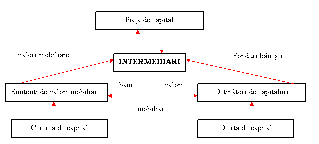

Lucrarea de faţă îşi propune să constituie un instrument e-learning util elevilor şi profesorilor de economie pentru predarea-învăţarea-evaluarea unităţii de învăţare BURSA DE VALORI BUCUREŞTI.
|
CAPITOLE: I. ELEMENTELE DEFINITORII ALE PIEŢEI DE CAPITAL II. BURSA DE VALORI. BURSA DE VALORI BUCUREŞTI III. SISTEMUL DE TRANZACŢIONARE AL BURSEI DE VALORI BUCUREŞTI |


1. 1. CONCEPTUL ŞI TRĂSĂTURILE PIEŢEI DE CAPITAL
PIAŢA DE CAPITAL reprezintă ansamblul relaţiilor şi mecanismelor prin intermediul cărora capitalurile disponibile şi dispersate din economie sunt dirijate către orice entităţi publice şi private solicitatoare de fonduri. Existenţa pieţei de capital este determinată de cererea de capital pentru necesităţi curente de trezorerie şi pentru investiţii, şi totodată , este condiţionată de un proces real de economisire ca fundament al ofertei de capital. Piaţa de capital funcţionează aşadar ca un mecanism de legătură intre cei la nivelul cărora se manifestă un surplus de capital (investitorii) şi cei care au nevoie de capital (emitenţii). Din punctul de vedere al sferei sale de cuprindere, in literatura de specialitate s-au structurat două concepţii referitoare la piaţa de capital: concepţia anglo-saxonă şi concepţia continenal-europeana (de sorginte franceză). In concepţia anglo-saxonă, piaţa de capital formează împreună cu piaţa monetară şi cu piaţa asigurărilor ceea ce se numeşte, cu un termen atotcuprinzător, piaţa financiară. In concepţia clasică continental europeană, piaţa de capital are o structură complexă, care cuprinde piaţa monetară, piaţa ipotecara şi piaţa financiară.
Piaţa de capital prezintă urmatorele trăsături:
Riscul investiţiei aparţine intotdeauna investitorilor, aşa cum rezultă din schema de mai jos.

SCHEMA 1: POZIŢIA INTERMEDIARILOR PE PIAŢA DE CAPITAL
Piaţa de capital oferă modalităţi de investire, respectiv de atragere a capitalului, diferite de cele specifice sistemului bancar. Ca o alternativă la constituirea depozitelor bancare, investitorii pot achiziţiona valori mobiliare, iar emitenţii, pentru a nu apela la credite bancare, pot atrage capitaluri prin emisiunea de acţiuni şi obligaţiuni. Acţiunea (ca parte din patrimoniul societăţii emitente) comportă un risc de capital pentru investitor, in sensul că veniturile aduse de aceasta sunt variabile in funcţie de modul de administrare a societăţii respective. Dacă compania este dizolvată, detinătorul acţiunii este despăgubit numai după ce toate creditele au fost rambursate.
Nevoia de finanţare a intreprinderilor pe baza emisiunii de acţiuni a fost marcată in multe ţări de doi factori:
Pieţele de obligaţiuni care sunt lichide şi active ajută de asemenea la diminuarea uneia dintre problemele cele mai critice ale finanţelor: disponibilitatea fondurilor pe termen lung.
In măsura in care acţiunile şi obligaţiunile reprezintă forme de investiţii viabile şi relativ sigure cu un venit atractiv pe termen lung, ele indeplinesc două funcţii :
ÎN ACELAŞI CAPITOL : 1. 1. CONCEPTUL ŞI TRĂSĂTURILE PIEŢEI DE CAPITAL 1. 2. CEREREA ŞI OFERTA DE CAPITAL 1. 3. STRUCTURA PIEŢEI DE CAPITAL 1. 4. PIAŢA PRIMARĂ ŞI PIAŢA SECUNDARĂ
|